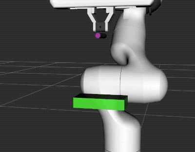

Subframes
Subframes are frames that are defined on CollisionObjects. They can be used to define points of interest on objects that you place in the scene, such as the opening of a bottle, the the tip of a screwdriver, or the head of a screw. They can be used for planning and to write robot instructions such as “pick up the bottle, then move the opening under the spout of the tap”, or “pick up the screwdriver, then place it above the head of the screw”.
Writing code that focuses on the object that the robot manipulates is not only more readable, but also more robust and portable between robots. This tutorial shows you how to define subframes on collision objects, publish them to the planning scene and use them to plan motions, so you can do things like this:
{kind=link}
In this animation, the robot moves the tip of the cylinder to different positions on the box.
Running The Demo
After having completed the steps in Getting Started, open two terminals. In the first terminal, execute this command to load up a panda, and wait for everything to finish loading:
roslaunch panda_moveit_config demo.launch
In the second terminal run the tutorial:
rosrun moveit_tutorials subframes_tutorial
In this terminal you should be able to enter numbers from 1-12 to send commands, and to see how the robot and the scene react.
The Code
The code for this example can be seen here in the moveit_tutorials GitHub project and is explained in detail below.
The code spawns a box and a cylinder in the planning scene, attaches the cylinder to the robot, and then lets you send motion commands via the command line. It also defines two convenience functions for sending a motion command, and for publishing the objects.
Defining two CollisionObjects with subframes
This helper function creates two objects and publishes them to the PlanningScene: a box and a cylinder. The box spawns in front of the gripper, the cylinder at the tip of the gripper, as if it had been grasped.
void spawnCollisionObjects(moveit::planning_interface::PlanningSceneInterface& planning_scene_interface)
{
double z_offset_box = .25; // The z-axis points away from the gripper
double z_offset_cylinder = .1;
First, we start defining the CollisionObject as usual.
moveit_msgs::CollisionObject box;
box.id = "box";
box.header.frame_id = "panda_hand";
box.primitives.resize(1);
box.primitive_poses.resize(1);
box.primitives[0].type = box.primitives[0].BOX;
box.primitives[0].dimensions.resize(3);
box.primitives[0].dimensions[0] = 0.05;
box.primitives[0].dimensions[1] = 0.1;
box.primitives[0].dimensions[2] = 0.02;
box.primitive_poses[0].position.z = z_offset_box;
Then, we define the subframes of the CollisionObject. The subframes are defined in the frame_id coordinate
system, just like the shapes that make up the object. Each subframe consists of a name and a pose.
In this tutorial, we set the orientation of the subframes so that the z-axis of the subframe
points away from the object.
This is not strictly necessary, but it is helpful to follow a convention, and it avoids confusion when
setting the orientation of the target pose later on.
box.subframe_names.resize(5);
box.subframe_poses.resize(5);
box.subframe_names[0] = "bottom";
box.subframe_poses[0].position.y = -.05;
box.subframe_poses[0].position.z = 0.0 + z_offset_box;
tf2::Quaternion orientation;
orientation.setRPY(90.0 / 180.0 * M_PI, 0, 0);
box.subframe_poses[0].orientation = tf2::toMsg(orientation);
Lastly, the objects are published to the PlanningScene. In this tutorial, we publish a box and a cylinder.
box.operation = moveit_msgs::CollisionObject::ADD;
cylinder.operation = moveit_msgs::CollisionObject::ADD;
planning_scene_interface.applyCollisionObjects({ box, cylinder });
}
Creating the planning request
In this tutorial, we use a small helper function to create our planning requests and move the robot.
bool moveToCartPose(const geometry_msgs::PoseStamped& pose, moveit::planning_interface::MoveGroupInterface& group,
const std::string& end_effector_link)
{
To use subframes of objects that are attached to the robot in planning, you need to set the end effector of your
move_group to the subframe of the object. The format has to be object_name/subframe_name, as shown
in the “Example 1” line.
Do not forget to reset your end_effector_link to a robot link when you detach your object, and the subframe
is not part of your robot anymore!
group.clearPoseTargets();
group.setEndEffectorLink(end_effector_link);
/*
group.setEndEffectorLink("cylinder/tip"); // Example 1
group.setEndEffectorLink("panda_hand"); // Example 2
*/
group.setStartStateToCurrentState();
group.setPoseTarget(pose);
The rest of the planning is done as usual. Naturally, you can also use the go() command instead of
plan() and execute().
ROS_INFO_STREAM("Planning motion to pose:");
ROS_INFO_STREAM(pose.pose.position.x << ", " << pose.pose.position.y << ", " << pose.pose.position.z);
moveit::planning_interface::MoveGroupInterface::Plan myplan;
if (group.plan(myplan) && group.execute(myplan))
return true;
ROS_WARN("Failed to perform motion.");
return false;
}
Preparing the scene
In the main function, we first spawn the objects in the planning scene, then attach the cylinder to the robot. Attaching the cylinder turns it purple in Rviz.
spawnCollisionObjects(planning_scene_interface);
moveit_msgs::AttachedCollisionObject att_coll_object;
att_coll_object.object.id = "cylinder";
att_coll_object.link_name = "panda_hand";
att_coll_object.object.operation = att_coll_object.object.ADD;
ROS_INFO_STREAM("Attaching cylinder to robot.");
planning_scene_interface.applyAttachedCollisionObject(att_coll_object);
Interactively testing the robot
We set up a small command line interface so you can interact with the simulation and see how it responds to certain commands. You can use it to experiment with the behavior of the robot when you remove the box and cylinder, respawn and reattach them, or create new planning requests. Try moving the robot into a new position and respawn the box and cylinder there (they are spawned relative to the robot wrist). Or try commands 7 and 8 to move different frames to the same position in space.
The command “2” moves the cylinder tip to the top of the box (the right side in the top animation).
else if (character_input == 2)
{
ROS_INFO_STREAM("Moving to top of box with cylinder tip");
target_pose.header.frame_id = "box/top";
target_orientation.setRPY(180.0 / 180.0 * M_PI, 0, 90.0 / 180.0 * M_PI);
target_pose.pose.orientation = tf2::toMsg(target_orientation);
target_pose.pose.position.z = 0.01;
showFrames(target_pose, "cylinder/tip");
moveToCartPose(target_pose, group, "cylinder/tip");
}
Setting the orientation
The target pose is given relative to a box subframe:
target_pose.header.frame_id = "box/bottom";
The orientation is determined by RPY angles to align the cylinder and box subframes:
target_orientation.setRPY(0, 180.0 / 180.0 * M_PI, 90.0 / 180.0 * M_PI);
target_pose.pose.orientation = tf2::toMsg(target_orientation);
To keep some distance to the box, we use a small offset:
target_pose.pose.position.z = 0.01;
showFrames(target_pose, "cylinder/tip");
moveToCartPose(target_pose, group, "cylinder/tip");
Technical notes
Subframes are not known to TF, so they cannot be used outside of MoveIt planning requests.
If you need the transformation to a subframe, you can obtain it from the PlanningScene’s
CollisionRobot using the getFrameTransform function. This returns an Eigen::Isometry3d object,
from which you can extract translation and quaternion (see here).
The translation and quaternion can then be used to create the Transform and register it in your TFListener.
Visualizing subframes
There is currently no visualization for subframes, but pull requests for this feature are welcome!
Troubleshooting
For older moveit_config packages that you have not generated yourself recently, the planning adapter
required for subframes might not be configured, and the subframe link might not be found. To fix this for your
moveit_config package, open the ompl_planning_pipeline.launch file in the <robot_moveit_config>/launch
folder of your robot. For the Panda robot it is this file.
Edit this launch file, find the lines where <arg name="planning_adapters"> is mentioned and insert default_planner_request_adapters/ResolveConstraintFrames after
the line default_planner_request_adapters/FixStartStatePathConstraints.